EfficientDet - Scalable and Efficient Object Detection
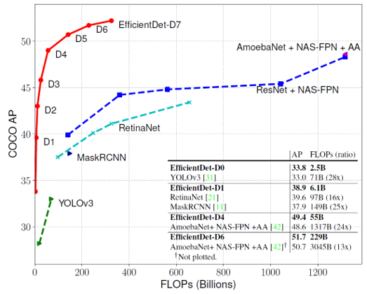
오늘 소개드릴 논문은 Google Research에서 2020년 CVPR에 발표한 Efficientdet: Scalable and efficient object detection 논문에 대한 리뷰입니다.
이 논문은 주어진 제약 조건(메모리 및 레이턴시) 아래에서 가장 효율적인 모델 구조를 찾아주는 EfficientNet을 object detection 분야에 접목시킨 연구를 다루고 있으며, 기존의 여러 모델과 비교하였을 떄 성능 및 효율성 측면에서 아주 뛰어난 결과를 보여주었습니다.
EfficientNet 구조를 backbone으로 하며, 그 논문에서 제안한 compound scaling을 활용해 여러 capacity의 모델을 제안했기 때문에 EfficientNet 논문을 읽고서 보시는 것을 추천드립니다. 그럼 시작하겠습니다!
EfficientDet Architecture
전통적으로 object detection을 수행하기 위한 모델 구조는 region-of-interest(ROI)를 제안하는 부분의 유무에 따라 one-stage와 two-stage로 구분합니다. 일반적으로 one-stage가 학습 및 추론 속도가 빠르고 간단한 구조를 가진다는 장점이 있다면, two-stage는 복잡한 구조를 가지지만 높은 정확성 및 AP 값을 가진다는 장점이 있습니다. 본문에서 소개한 EfficientDet은 ROI proposal 단계가 없으면서도 모델의 구조 최적화를 통해 높은 성능을 보여줍니다.
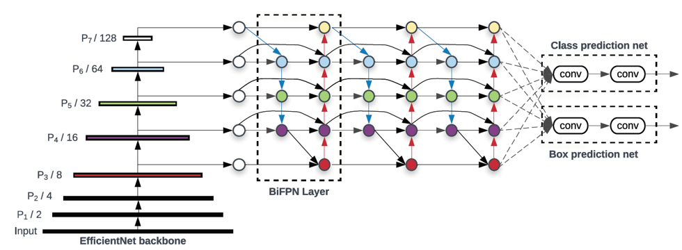
EfficientDet은 크게 CNN backbone, BiFPN, Class/Bbox prediction의 세 부분으로 구성되어 있습니다. 하나씩 살펴보겠습니다.
- CNN backbone (EfficientNet)
CNN backbone으로는 SOTA의 이미지 분류 성능을 보여준 EfficientNet이 사용되었습니다. EfficientNet은 convolution 연산 기반 모델의 성능을 높이기 위해 모델의 width(channel 개수), depth(layer 개수), resolution(input 크기)를 동시에 늘리는 compound scaling을 적용하였습니다. 또한 세 가지 hyperparameter를 일정 비율로 키워 memory, latency 등의 자원 제약에 따라 모델의 capacity를 증가하였습니다. 결과적으로 EfficientNet은 같은 자원을 활용한 ResNet이나 Inception, DenseNet보다 훨씬 높은 성능을 보여주었습니다. EfficientDet은 이러한 EfficientNet을 backbone으로 하여 객체의 특징을 잘 나타내주는 여러 scale의 feature map을 추출하였습니다.
- Weighted Bidirectional FPN
전통적인 CNN 기반의 one-stage 모델들은 하나의 feature map에서 object detection을 수행했기 때문에 다양한 크기의 객체를 검출하지 못하는 문제가 있었습니다. Feature Pyramid Network(FPN) 구조는 이를 해결하기 위해 등장하였습니다. FPN은 여러 layer에서 다양한 scale의 feature map을 추출하고, 각각으로부터 object detection을 수행하기 때문에 다양한 크기의 객체 검출이 가능했습니다. 또한 여러 resolution의 feature map을 더해주는 multi-scale feature fusion을 통해 성능을 높여주었습니다.
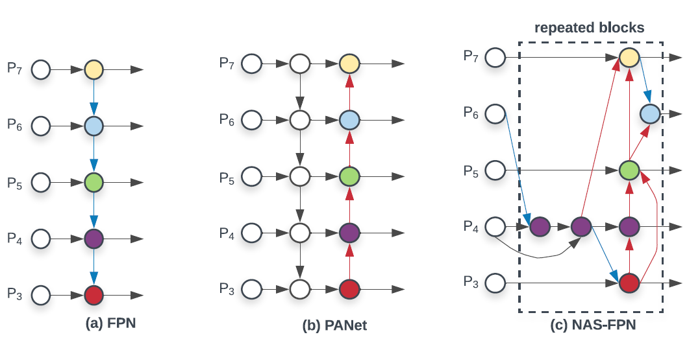
Multi-scale feature fusion 구조는 FPN에서 처음 제안된 이후에 더 높은 성능을 실현하기 위해 다양하게 변화하였습니다. FPN이 top-down 방식으로 서로 다른 두 scale의 feature map을 더해주었다면, PANet에서는 기존 FPN 구조에 bottom-up path aggregation 구조를 추가하여 information flow를 다양화해주었습니다. 또한 NAS-FPN에서는 강화학습을 이용한 수 천 시간의 학습을 통해 성능과 효율성이 동시에 뛰어난 cross-scale connection 구조를 제안하였습니다.
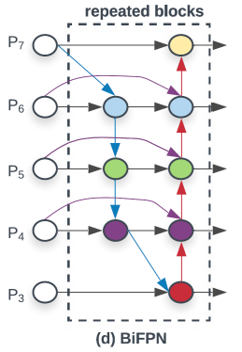
EfficientDet은 multi-scale feature fusion을 위해 기존에 제안된 FPN류 구조들 중 높은 성능을 내는 PANet을 몇 가지 부분에서 수정하였습니다. 우선 feature-fusion 없이 하나의 input만을 받는 top-down의 맨 위, 맨 아래 node를 제거하였습니다. 또한 같은 level에 있는 input feature를 output에 더해주는 skip-connection을 추가하여, 적은 수의 계산량으로 feature fusion을 수행할 수 있도록 설계하였습니다. 마지막으로 구성한 bi-directional(top-down & bottom-up) 구조를 하나의 블럭으로 두고 여러 번 반복해 high-level feature fusion을 가능하게 만들었습니다. BiFPN 블럭의 반복 횟수는 compound scaling을 통해 최적화하였습니다.
EfficientDet은 feature map를 더하는 과정도 개선하였습니다. 기존의 multi-scale feature fusion 과정에서는 서로 다른 여러 scale의 feature map을 단순하게 같은 비율로 더해주었습니다. 하지만 EfficientDet에서는 서로 다른 resolution을 가진 input으로부터 얻어진 feature map들이기 때문에 더해지는 과정에서 output에 기여하는 정도가 다를 수 있다고 판단하여, 이를 반영하여 weight를 곱해서 더해주는 방법을 제안하였습니다. 각 feature map의 weight는 다른 변수와 마찬가지로 학습을 통해서 최적화하였고, 계산의 효율성을 위해 feature 단위의 스칼라 값으로 정의하였습니다. 또한 feature fusion을 하는 과정에서 weight의 총합을 1로 normalize 해주었는데, latency cost를 줄이기 위해 softmax layer 대신 단순히 weight들을 더한 값에서 각 weight의 비율을 계산하는 fast-normalization fusion 방식을 활용하였습니다.
마지막으로 parameter 개수를 줄이기 위해 feature fusion 과정에서 발생하는 convolution 연산들을 모두 depthwise-convolution으로 대신하였고, batch normalization과 activation layer를 convolution 뒤에 추가하였습니다.
- Class/Bbox prediction layer
각각 여러 겹의 Convolution layer을 이용해 class 정보와 bounding box 좌표를 예측하였습니다. 이 때 convolution layer의 개수는 compound scaling을 통해 최적화하였습니다.
Compound Scaling
이 논문에서 여러 번 반복해서 강조하는 EfficientDet의 설계 목표는 자원의 제약(resource constraint)이 주어질 때 가장 효율적인 모델 구조를 찾는 것입니다. EfficientDet에서는 다양한 resource constraint 상황을 대비하기 위해, baseline 구조를 잡고, 구조를 구성하는 각 요소의 크기를 동시에 늘리는 compound scaling을 이용하여 모델의 크기를 키워나갔습니다. EfficientNet에서는 이러한 compound scaling 과정을 grid search를 통해서 수행하여 최적의 compound coefficient를 찾았지만, EfficientDet은 훨씬 더 큰 차원의 모델이기에 grid search 대신에 heuristic 기반의 scaling approach를 활용하였습니다. 결과적으로 얻은 8개의 EfficientDet 모델에 대한 scaling configuration은 아래와 같습니다.
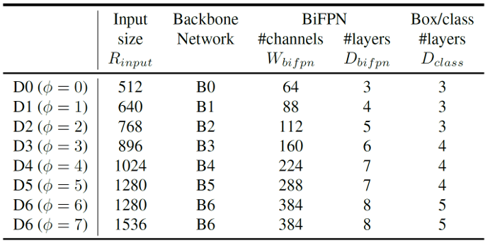
Training
- Dataset
EfficientDet은 COCO2017의 object detection 데이터셋을 활용하여 각각 약 118,000장과 5,000장의 이미지를 이용해 학습 및 검증되었습니다.
- Loss function
대부분의 object detection 모델과 마찬가지로, EfficientDet도 여러가지 loss function을 활용하였습니다. Class predictor에 대한 classification loss와 bbox predictor에 대한 L1 및 IOU loss의 합을 loss function으로 정의하였습니다.
- 그 외 details
Stochastic gradient descent(SGD) optimizer를 이용하였습니다. 또한 activation function으로는 ReLU를 대체하기 위해 Google에서 고안한 swish activation을 이용하였습니다. Sigmoid 함수에 일차함수를 곱한 형태입니다.
각 모델은 32개의 TPU v3 코어를 활용하여 코어 당 4개의 이미지를 학습했고, 결과적으로 128의 batch size를 가집니다.
- Segmentation
EfficientDet에 약간의 구조를 추가하여 semantic segmentation을 학습해보았는데, ResNet 또는 Xception 기반의 DeepLabV3보다 성능이 뛰어났다고 합니다. 모델 구조는 D4 EfficientDet에 backbone의 level-2 feature를 받아 pixelwise classification하는 layer를 추가하였습니다.
Result
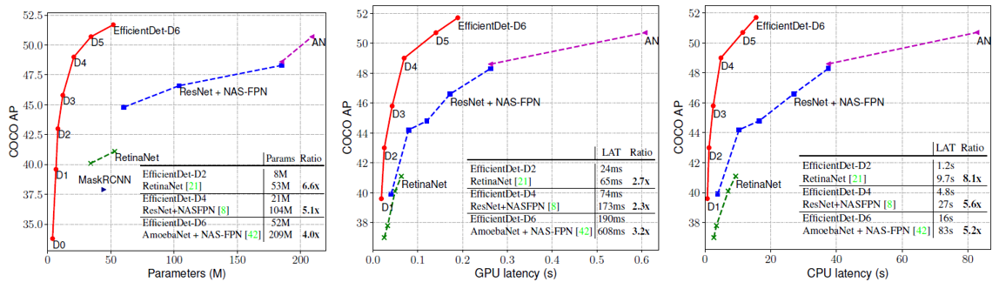
위의 표는 다른 object detection 모델들과 비교한 EfficientDet의 성능을 나타내는데, 압도적인 결과를 보여주고 있습니다. EfficientDet은 다른 모델들과 비슷한 Parameter 개수나 CPU/GPU latency의 조건에서 뛰어난 AP성능을 보여주었습니다. 실험을 할 때, 다른 네트워크에 대해서는 공정한 비교를 위해 convolution 연산을 모두 depthwise로 바꿔주었다고 합니다. 모델의 크기를 늘리는 데에는 한계가 있기 떄문에, 주어진 모델 capacity에서 뛰어난 효율성을 보여주어야 한다는 EfficientDet의 철학이 제대로 반영된 결과라고 할 수 있을 것 같습니다. 유사한 크기의 다른 네트워크에 대한 스펙을 아래 표로 정리하였습니다.
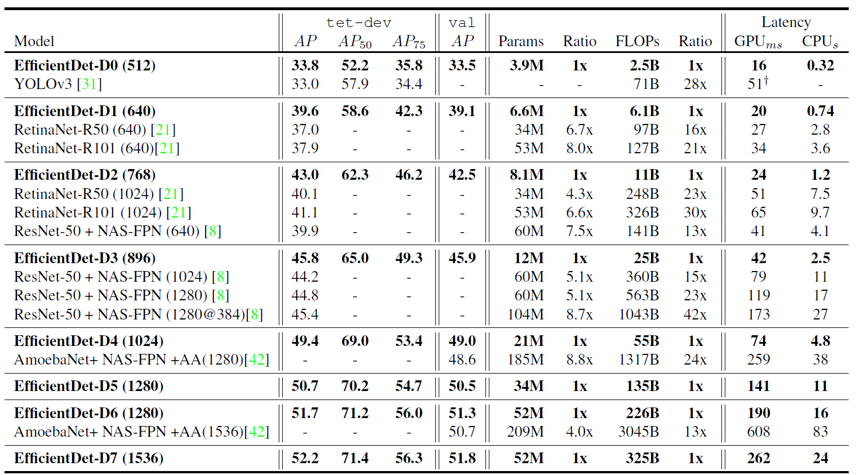
논문에서는 여러가지 ablation study를 진행하였는데, 우선 EfficientDet 내의 EfficientNet과 BiFPN을 각각 ResNet과 FPN으로 바꾼 모델과 성능을 비교해보았습니다. 각각을 다른 구조로 치환한 두 실험에서 모두 AP가 3~4정도 낮아진 걸로 보아 두 구조 모두 성능에 중요한 역할을 하는 것을 확인할 수 있었습니다.
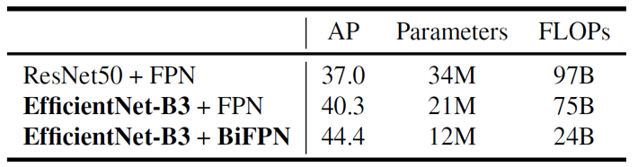
또한 BiFPN 구조 우수성을 보여주기 위해, EfficientDet을 다른 여러 multi-scale feature fusion 방식으로 바꾸어 결과를 비교하였습니다. 마찬가지로 공정한 비교를 위해 FPN 블럭을 반복하여 parameter 개수를 비슷하게 맞춰주었습니다. 결과에서 BiFPN은 기존의 방법 중 가장 뛰어난 성능을 내던 PANet의 AP를 따라잡거나 뛰어 넘는 모습을 보여주었으며, 훨씬 작은 수의 메모리와 FLOPs를 이용하며 효율성 측면에서 압도적인 모습을 보여주었습니다.
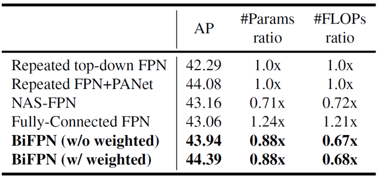
학습이 진행됨에 따라 multi-scale feature fusion에 사용하는 weight 값의 변화 과정을 softmax와 fast normalization fusion 각각을 사용했을 때에 대해 그려보았습니다. 두 실험에서 모두 모델이 데이터에 따라 어떤 resolution의 input을 강조해야하는지를 잘 학습하고 있는 것 같았고, 결과적으로 유사한 weight 값으로 수렴하였음을 확인할 수 있었습니다.
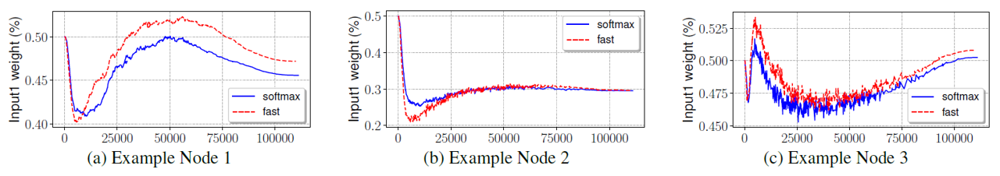
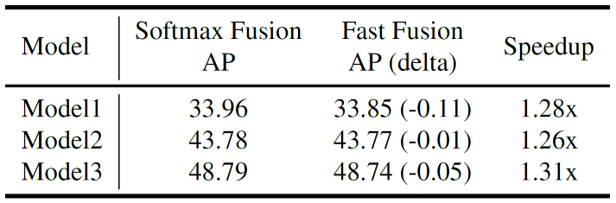
EfficientDet 구조에서 각 구성 요소의 hyperparameter를 동시에 높여서 학습시키는 compound scaling 도 각각의 hyperparameter를 하나씩 키워서 학습시킬 때보다 훨씬 더 높은 AP 결과를 보여주었습니다.
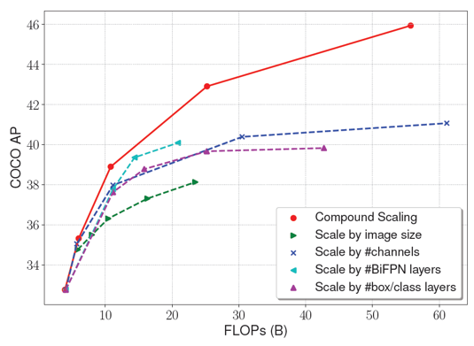
Summary
EfficientDet은 발표일 기준 COCO object detection task에 대해 SOTA의 성능 및 효율성을 보여준 획기적인 논문입니다. 실제로 공식 github 코드를 받아 자율주행 및 문자인식 데이터셋으로 fine-tuning하여 사용해보았는데, 다른 모델들과 비교하여 꽤나 뛰어난 성능을 보여주었습니다. 또한 각자의 자원 제약 조건(GPU 메모리 크기, 최대 추론 시간)에 맞는 최적의 모델을 선택할 수 있기 때문에 제가 사용하고 있는 GPU 메모리에 맞는 모델을 능동적으로 결정할 수 있어 효용성이 크다고 느꼈습니다. 다만 Compound scaling을 적용함에 있어서 일정한 비율로 scale-up을 해줄 때 좀 더 최적화된 heuristic 또는 규칙이 있을 수도 있겠다는 생각이 듭니다. 어떤 모델이 EfficientDet의 성능 또는 효율성을 뛰어넘을 수 있을지 기대하며 이번 리뷰는 마치겠습니다. 읽어주셔서 감사합니다 :)
참고 문헌 및 출처